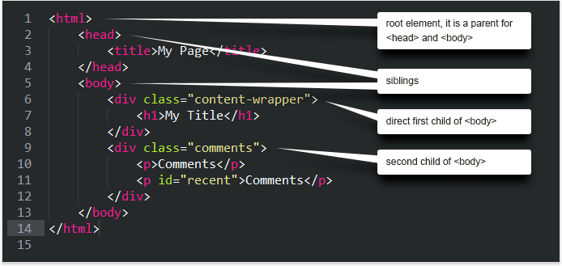
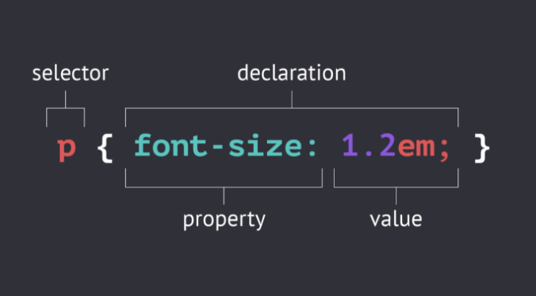
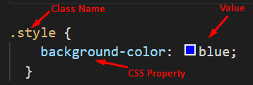
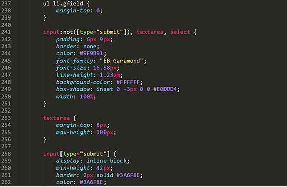
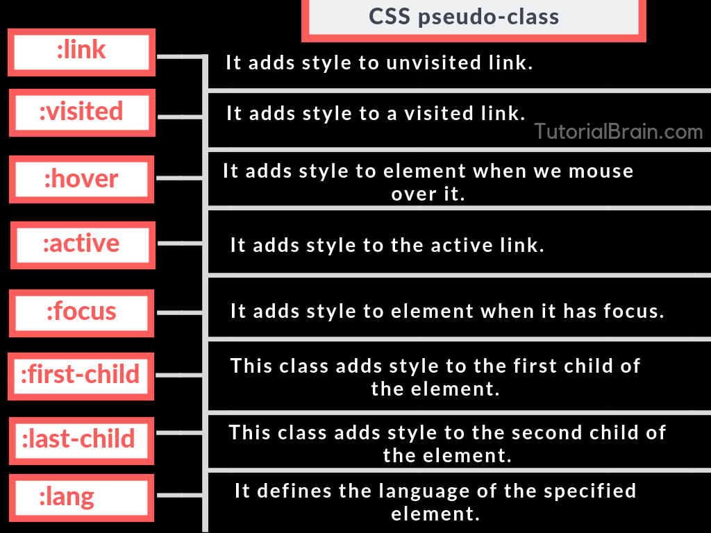
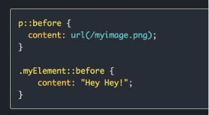
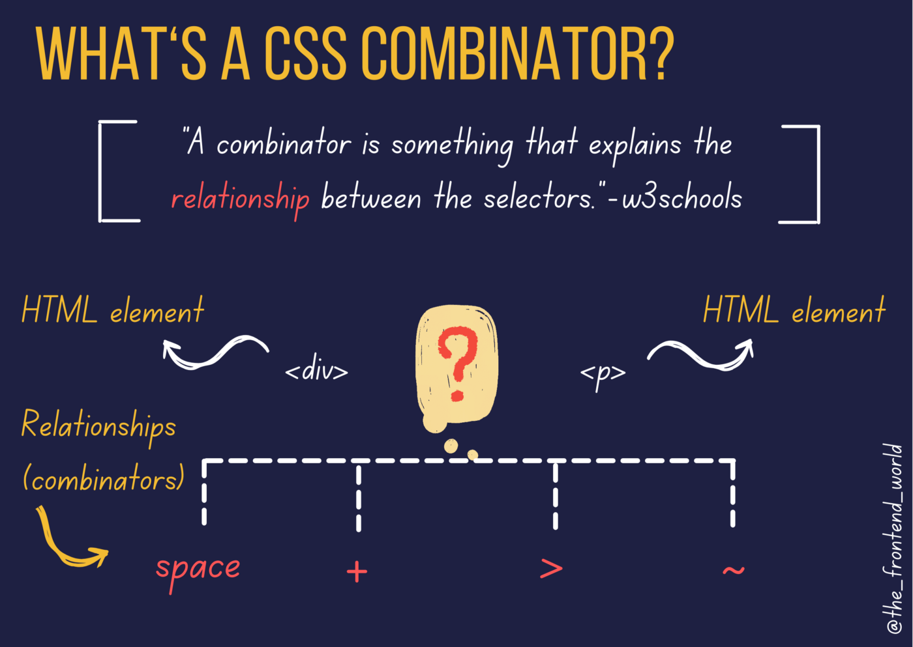
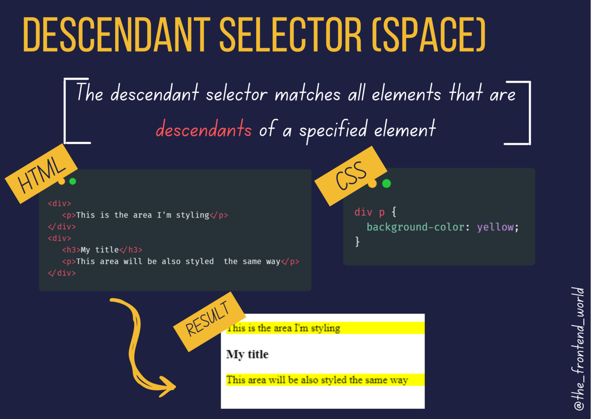

The Complete Guide To CSS Selectors
Learning CSS3 selectors - "The Basics"

To apply CSS to an element you need to select it. CSS provides you with a number of different ways to do this, and you can explore them in this module.
All HTML tags have styles associated with them.
Using a class selector gives you the ability to setup an independent style that you can then apply to any HTML Tag.
Unlike an HTML selector, which automatically targets a specific tag, a class is given a unique name that is then specified using the sytle attribute in the HTML tag or tags you want to use it in.
For example:
p.authorName
font-size: 1em;
}
To define an HTML selector:

Start with the HTML selector whose properties yiou want to define. Add a curly bracket to open your rule. Make sure you always close your declaration list with a curly bracket.
To define a class selector:

Type a period (.) and a class name, then open and close your decalration block with curly brackets.
read more
Learning CSS3 selectors - "Attribute Selectors"

You can look for elements that have a certain HTML attribute, or have a certain value for an HTML attribute, using the attribute selector.
Instruct CSS to look for attributes by wrapping the selector with square brackets
([ ]).
[ data-type='primary' ]{
color: blue;
}
This CSS looks for all elements that have an attribute of data-type with a value of primary, like this:
<div data-type="primary"> </div>
Learning CSS3 selectors - "Action PseudoClass Selectors"

HTML elements find themselves in various states, either because they are interacted with, or one of their child elements is in a certain state.
For example, an HTML element could be hovered with the mouse pointer by a user or a child element could also be hovered by the user. For those situations, use the
:hover
pseudo-class.
read more
Pseudo-element #

Pseudo-elements differ from pseudo-classes because instead of responding to the platform state, they act as if they are inserting a new element with CSS. Pseudo-elements are also syntactically different from pseudo-classes, because instead of using a single colon (:), we use a double colon (::)
read more
Learning CSS3 selectors - "Combinators Selectors"

A combinator is what sits between two selectors. For example, if the selector was p > strong, the combinator is the > character. The selectors which use these combinators help you select items based on their position in the document.
read more
Descendant combinator #

To understand descendant combinators, you need to first understand parent and child elements.
<p>A paragraph of text with some </strong> bold text for emphasis</strong>.</p>
The parent element is the <p> which contains text. Inside that <p> element is a <strong> element, making its content bold. Because it is inside the <p>, it is a child element.
read more